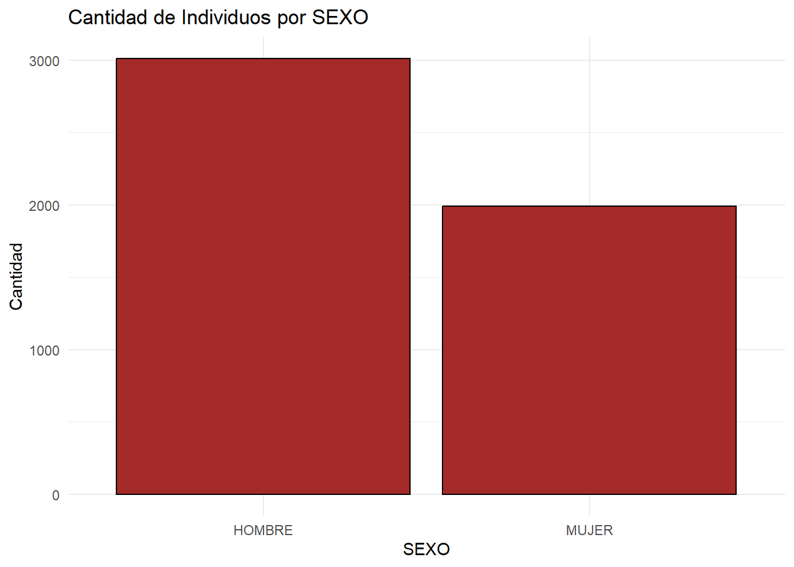
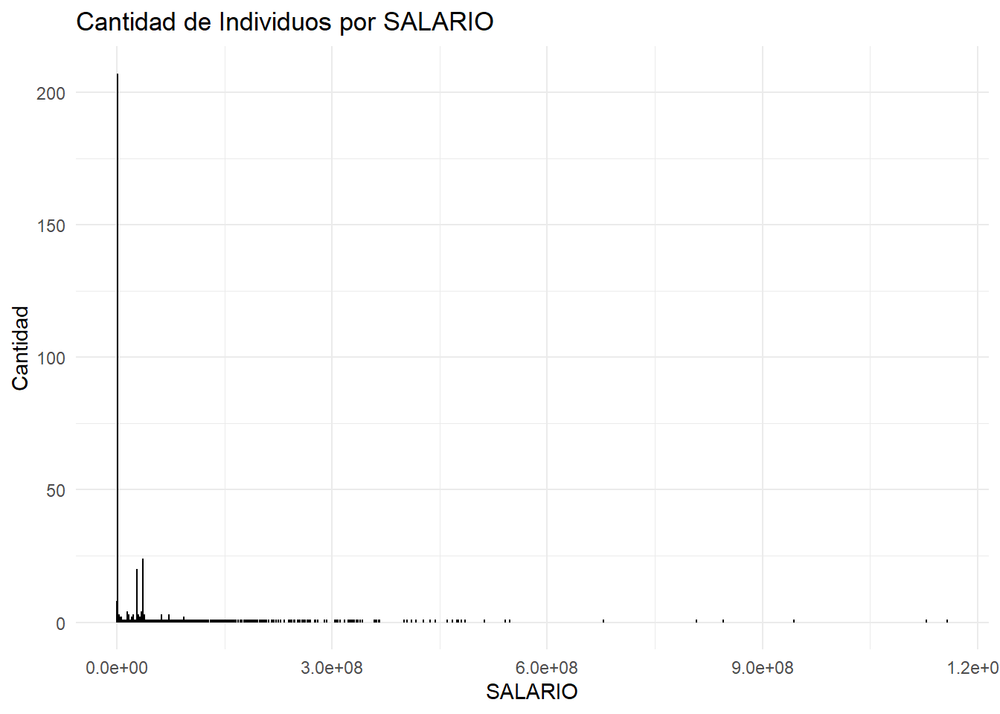
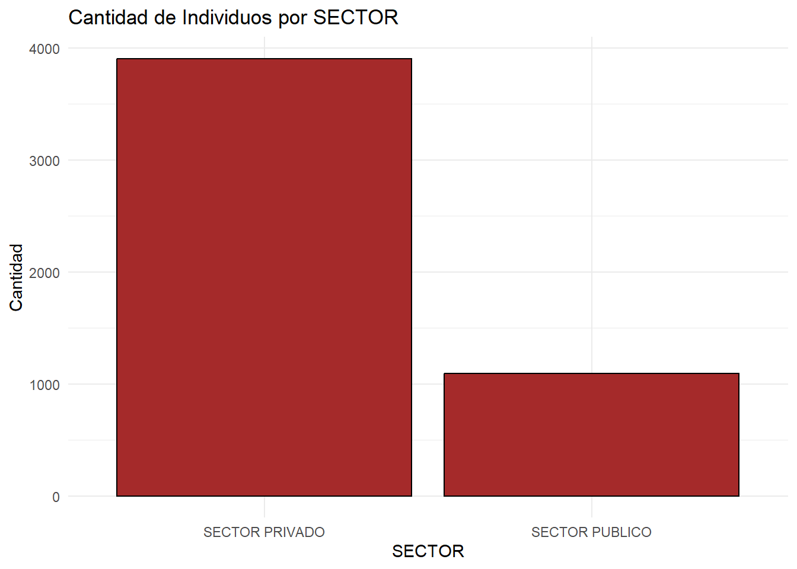
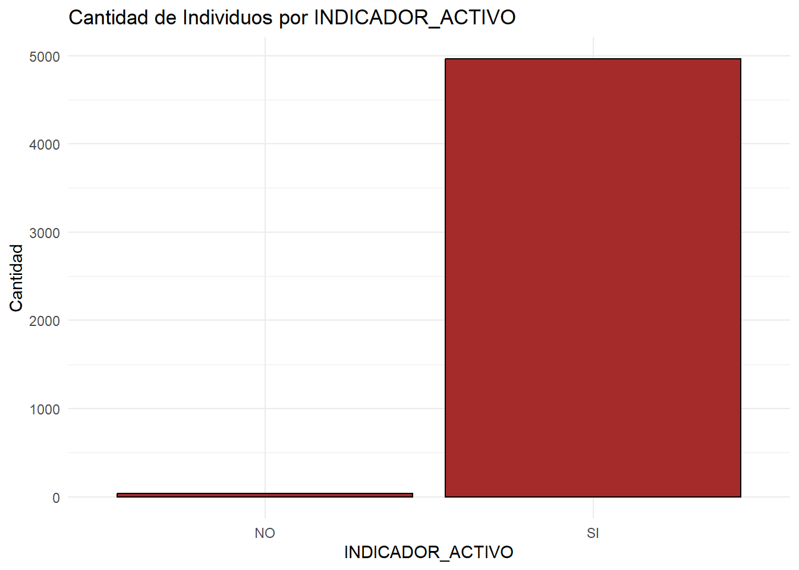
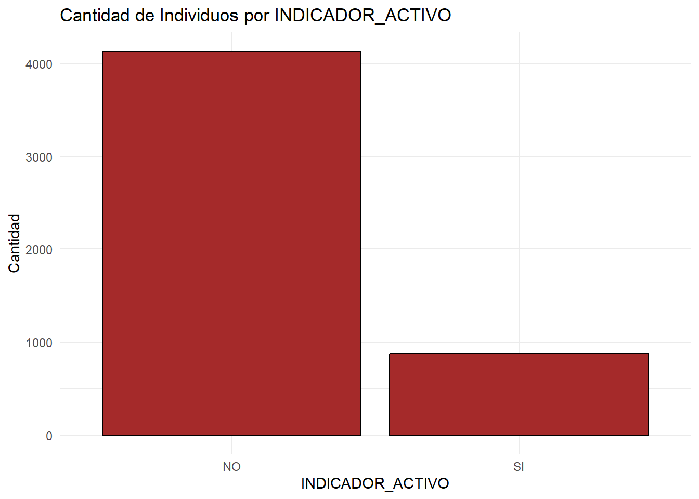
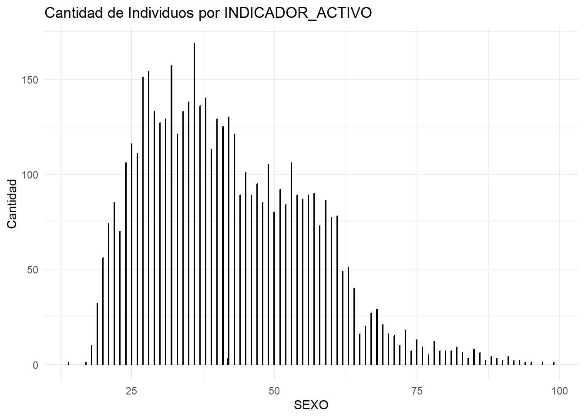

Rows: 5000 Columns: 9
── Column specification ────────────────────────────────────────────────────────
Delimiter: ","
chr (6): SEXO, TIPO_ASEGURAMIENTO, SECTOR, INDICADOR_ACTIVO, INDICADOR.EXTRA...
dbl (2): IDENTIFICACION, EDAD
num (1): SALARIO
ℹ Use `spec()` to retrieve the full column specification for this data.
ℹ Specify the column types or set `show_col_types = FALSE` to quiet this message.
2.(r) Realice un resumen de 5 números incluyendo el promedio. Para las columnas numéricas
3.(r) Realice una columna donde se identifiquen valores atípicos haciendo uso del Z-Score, de tal manera que si el valor absoluto del Z-Score es mayor a 1,96 se considera un valor atípico. Esto para la columna de salario y edad.
4.(r) Detecte el porcentaje de valores faltantes en cada una de las columnas.
for (columna innames(moras)) { contar_na <-sum(is.na(moras[[columna]])) porcentaje <-round((contar_na /nrow(moras)) *100, 2)cat("-", columna, ":", porcentaje, "% de NA\n") }
- IDENTIFICACION : 0 % de NA
- SEXO : 0 % de NA
- SALARIO : 0.06 % de NA
- TIPO_ASEGURAMIENTO : 0.04 % de NA
- SECTOR : 0 % de NA
- INDICADOR_ACTIVO : 0 % de NA
- INDICADOR.EXTRANJERO : 0 % de NA
- INDICADOR_MOROSO : 0 % de NA
- EDAD : 0.06 % de NA
- ATIPICO_SALARIO : 0 % de NA
- ATIPICO_EDAD : 0 % de NA
5.(r) Impute los valores faltantes haciendo uso de algún método de su preferencia.
6.(r) Realice gráficos donde se vea la cantidad de individuos por cada categoría
ggplot(moras, aes(x = SEXO)) +geom_bar(fill ="brown", color ="black") +labs(title ="Cantidad de Individuos por SEXO",x ="SEXO", y ="Cantidad") +theme_minimal()

Se puede ver que nuestros datos tiene más hombres que mujeres
ggplot(moras, aes(x = SALARIO)) +geom_bar(fill ="brown", color ="black") +labs(title ="Cantidad de Individuos por SALARIO",x ="SALARIO", y ="Cantidad") +theme_minimal()

Se puede ver que en algunos casos, los salario son bastantes grande en comparación con los demás, note que tiene un cero de más en cada columna, entonces para la comprensión solo se tiene que eliminar uno, no son 5 millones, sino 500 mil y así
ggplot(moras, aes(x = SECTOR)) +geom_bar(fill ="brown", color ="black") +labs(title ="Cantidad de Individuos por SECTOR",x ="SECTOR", y ="Cantidad") +theme_minimal()

En esta se puede ver como hay más personas del sector privado que del público
ggplot(moras, aes(x = INDICADOR_ACTIVO)) +geom_bar(fill ="brown", color ="black") +labs(title ="Cantidad de Individuos por INDICADOR_ACTIVO",x ="INDICADOR_ACTIVO", y ="Cantidad") +theme_minimal()

Se puede ver como todos estan activos
ggplot(moras, aes(x = INDICADOR_MOROSO)) +geom_bar(fill ="brown", color ="black") +labs(title ="Cantidad de Individuos por INDICADOR_ACTIVO",x ="INDICADOR_ACTIVO", y ="Cantidad") +theme_minimal()

se puede ver que la mayoria de las personas si van pagando sus cuotas y que no son morosos pero que si hay morosidad
ggplot(moras, aes(x = EDAD)) +geom_bar(fill ="brown", color ="black") +labs(title ="Cantidad de Individuos por INDICADOR_ACTIVO",x ="SEXO", y ="Cantidad") +theme_minimal()

Se puede ver como se distribuyo las edades de las personas y que la mayor cantida esta entre los 25 y los 45
(Excel) Realice un gráfico para cada una de las variables categóricas en donde se vea el porcentaje de personas morosa por cada clase. Analice los resultados.
9.(r) Replique lo anterior, items 2-8, en el lenguaje de programación R y haga uso de Git, agregue un .gitignore conveniente. Cada vez que termine un punto realice un commit. El commit final debe ser el punto que se muestra a continuación. Usar commits convencionales. repositorio https://github.com/Cristhian892/Examen-II-virtual.git nota: se me olvido hacer los commit, los hice cuando termine hasta el punto 8 por estan segudos, el punto 10 cuando realice los commit de subida del 2-8 no lo e realio
Se busca encontrar cuáles son las variables que podrían tener mayor relación con que la persona sea morosa o no, para ello se decide realizar un árbol de decisión por su interpretabilidad y su fácil explicación a los altos mandos. A continuación se adjunta un código ejemplo de cómo se construye un árbol y cómo se muestra $ #| eval: false $ library(rpart) $ library(rpart.plot) $ tree <- rpart(y~., data = df) $ rpart.plot(tree) En este caso la variable y es la variable que se quiere explicar con las otras y . indica que se usen todas las variables, recuerde eliminar el identificador único del df. Podría requerir codificar de una manera diferente algunas clases en las variables categóricas, esto para una mejor visualización. Explique los resultados del árbol para alguien que no tiene tanta formación cuantitativa y busca tomar decisiones con base en sus resultados.
El árbol nos ayuda a observar cuáles son las variables que tienen un mayor peso para detectar si alguien será moroso. En el árbol se ve como los trabajadores independientes son de gran riesgo en volverse morosos, los que son asegurados voluntarios presentan un riesgo moderado y los asalariados son de menor riesgo. Las personas con salarios bajaos son más propensos a quedar morosos y cuando aumenta el salario el riesgo de morosidad empieza a disminuir. Ahora viendo el sector, vemos que el sector privado tiene mayor probabilidad de ser morosos que los del sector público y con base a la edad entre más joven más propenso a ser moroso y entre más edad este riesgo baja.